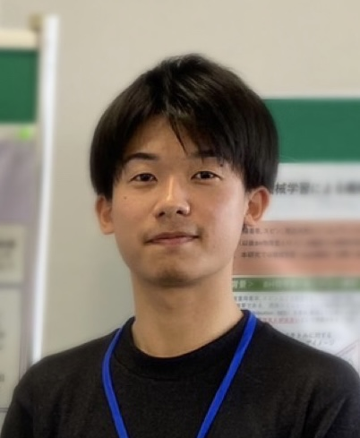

自己紹介
About Me

氏名
中尾 颯吾 (Sogo Nakao)
所属
筑波大学大学院 理工情報生命学術院 数理物質科学研究群 物理学学位プログラム 宇宙物理理論研究室（計算科学研究センター） 大須賀グループ
研究テーマ
超臨界低角運動量ブラックホール降着流、GR-RMHDシミュレーション、潮汐破壊現象（TDE）
ひとこと
TDEなどのブラックホールに関係する突発天体は、宇宙初期のSMBH形成問題を解決するための重要な手掛かりとして、
これまで多くの研究がなされてきました。我々は、超臨界降着流を数値的に解くことができる一般相対論的輻射磁気流体力学計算コード「UWABAMI+INAZUMA」を用いて、
TDE発生直後に低角運動量のガスが超臨界でBH近傍に流入する場合の降着構造や観測的性質を調査しています。
研究実績
Research Experience
- 中尾颯吾, 大須賀健, 朝比奈雄太, 「一般相対論的輻射磁気流体計算で探る超臨界低角運動量降着流；角運動量と光度の関係」, 天体形成研究会, 筑波大学, 2024年10月, 口頭 //
- 中尾颯吾, 大須賀健, 髙橋博之, 朝比奈雄太, 「一般相対論的輻射磁気流体力学計算による超臨界低角運動量ブラックホール降着流の研究 -スリム円盤モデルとの比較-」, ブラックホールジェット・降着円盤・円盤風研究会2025, 名古屋市立大学, 2025年3月, ポスター
- 中尾颯吾, 大須賀健, 髙橋博之, 朝比奈雄太, 「超臨界低角運動量ブラックホール降着流は高光度天体のメカニズムか」, Exploring Extreme Transients: Frontiers in the Early Universe and Time-Domain Astronomy, 京都大学益川ホール, 2025年8月, 口頭
- 中尾颯吾, 大須賀健, 髙橋博之, 朝比奈雄太, 「ブラックホール近傍への低角運動量ガスの超臨界流入による超エディントン放射」, 日本天文学会2025年秋季年会, 海峡メッセ下関, 2025年9月, 口頭
- 中尾颯吾, 大須賀健, 髙橋博之, 朝比奈雄太, 「一般相対論的輻射磁気流体計算による超臨界ブラックホール低角運動量降着流の研究」, 第38回理論懇シンポジウム, 筑波大学, 2025年12月, ポスター
- 中尾颯吾, 大須賀健, 髙橋博之, 朝比奈雄太, 「一般相対論的輻射流体力学計算による超臨界低角運動量ブラックホール降着流の研究」, ブラックホールジェット・降着円盤・円盤風研究会2026, 駒澤大学, 2026年3月, 口頭
連絡先
Contact
Email: nakaos[at]ccs.tsukuba.ac.jp